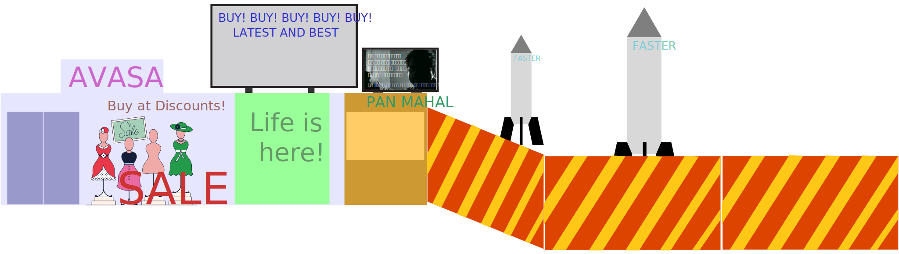

I work in a textile factory 3 kms away.
Yes, I know walking's good for one. But, in this pollution? Why do you think I am?
If I choose to travel in them. For, this 3km journey, it takes 30 mins every morning.
Also, The public busses are expensive. My colleagues who travel from 10km far, have to spend __% of their income for travel by public busses. They choose alternatives.
The autos and tempos are convenient on the wallet. but are crammed. But, that's alright, I guess, We adjust.